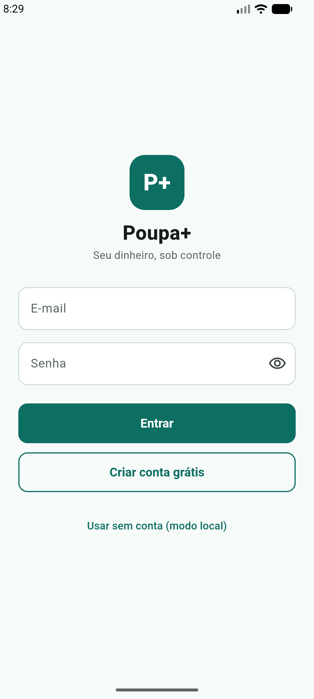
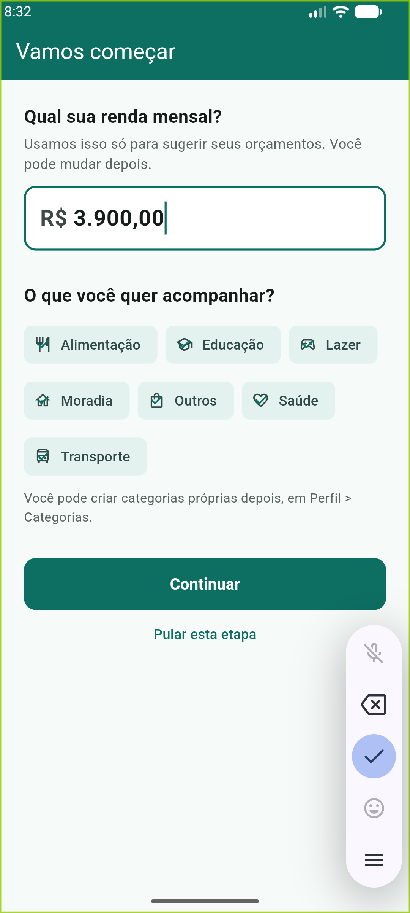
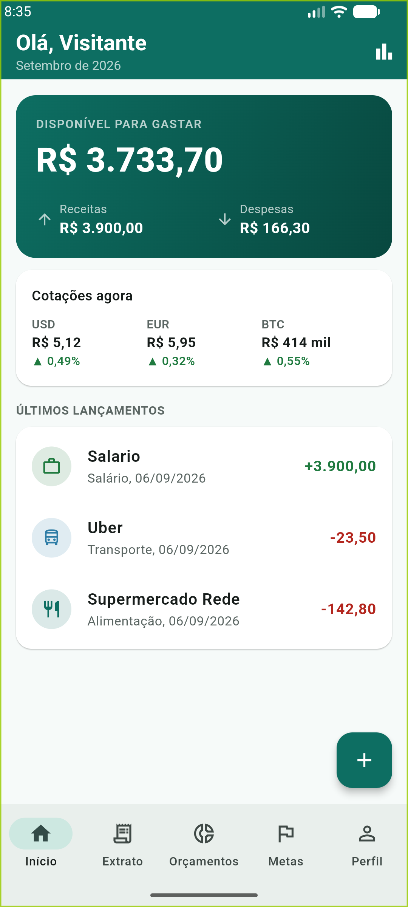
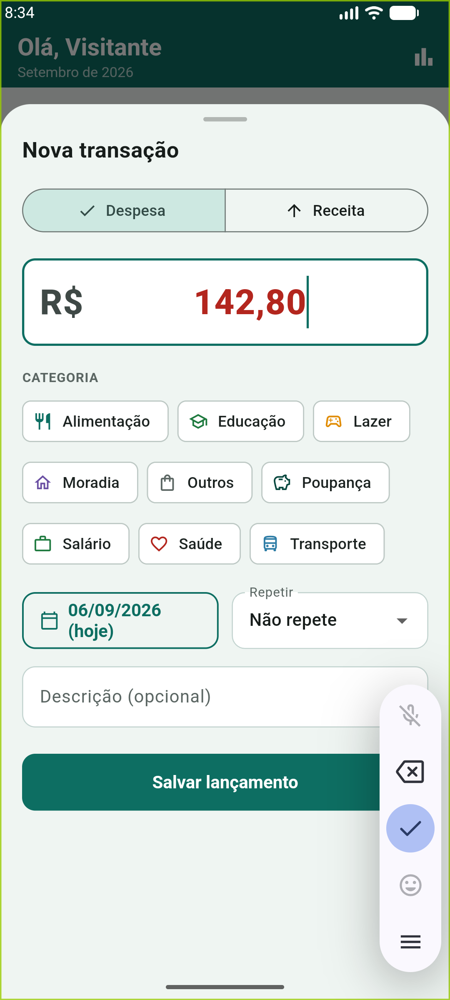
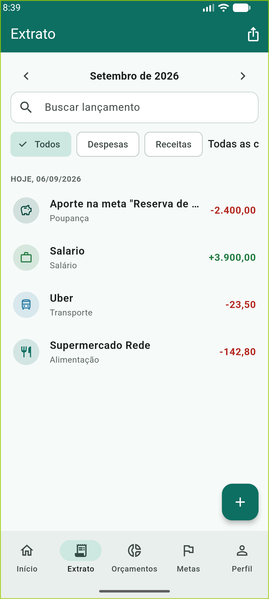
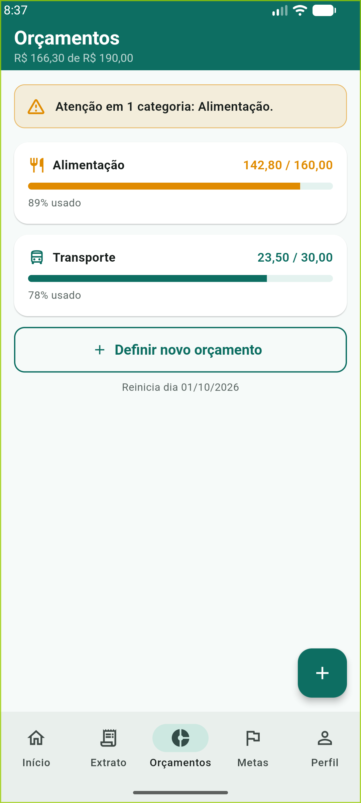
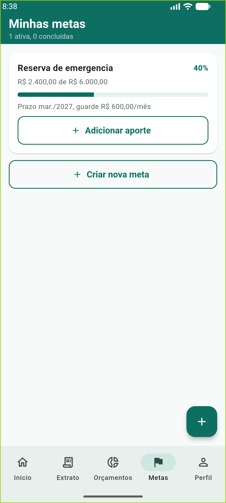
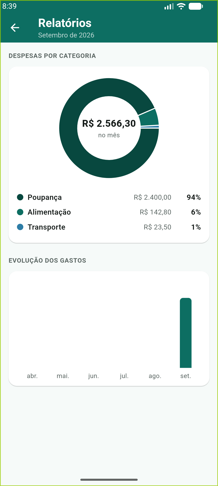

| Aluno | Vinicios Andrei Mensen |
| Curso | Análise e Desenvolvimento de Sistemas |
| Professor | Alysson Borges |
| Turma | 28743 - DESENVOLVIMENTO MOBILE - EAD54-12 |
| Entrega | Implementação do aplicativo definido no Documento de Concepção, Requisitos e Prototipação (Atividade 1) |
O Poupa+ é um aplicativo de gestão de finanças pessoais construído sobre uma tese simples, definida na fase de concepção: registrar um gasto precisa levar menos de dez segundos. Esta entrega implementa a versão 1 do produto com todos os requisitos essenciais (RF01 a RF09), todos os importantes (RF10 a RF13) e um dos desejáveis (RF14, exportação CSV), além da integração com uma API pública de cotações para cumprir o critério de comunicação com servidores.
O desenvolvimento seguiu o cronograma da seção 5.3 do documento de concepção, adaptado ao formato individual:
usuario, categoria, lancamento, orcamento, meta, aporte), autenticação local, CRUD de lançamentos, painel e extrato.flutter analyze sem avisos.A rastreabilidade entre requisito e tela definida na seção 4.4 do documento de concepção foi mantida: cada tela implementada referencia nos comentários do código os requisitos que atende.
A escolha foi feita na Atividade 1 por matriz de decisão ponderada (Flutter somou 126 pontos contra 108 do nativo Android, seção 3.3 do documento). Os fatores decisivos se confirmaram na prática:
O Android Studio permanece a IDE de referência do projeto (edição, emulador AVD e build), e o build Android usa Gradle (Kotlin DSL) como definido pelo template oficial do Flutter. Ou seja, as ferramentas estudadas na disciplina (Android Studio e Gradle) estão presentes na cadeia de build, com o Dart/Flutter como camada de aplicação, conforme decidido e fundamentado na Atividade 1.
views (widgets) -> viewmodels (Provider/ChangeNotifier) -> repositórios -> SQLite / API
core/: tema com o sistema de design da concepção (paleta #0D6E62 etc.), formatadores pt-BR e validadores das regras RN01 e RN03.models/: entidades imutáveis com toMap/fromMap. O estado derivado (percentual de orçamento, projeção de meta) vive em classes de status (OrcamentoStatus, MetaStatus) puras e testáveis.data/: um repositório por agregado. A interface exposta não depende do mecanismo de persistência, o que permite trocar o SQLite por um backend remoto (RF15 futuro) sem tocar nas views, como previsto na seção 5.1.viewmodels/: SessaoViewModel (autenticação e onboarding), FinancasViewModel (fonte única de verdade dos dados do mês: após cada mutação recarrega resumo, extrato, orçamentos, metas e relatórios de uma vez, evitando estados inconsistentes entre abas), CategoriaViewModel e CotacaoViewModel.Uma decisão importante: todos os valores monetários circulam como inteiros em centavos. Ponto flutuante causa erros de arredondamento clássicos em dinheiro (0.1 + 0.2 não dá exatamente 0.3); com centavos inteiros, somas e comparações de orçamento são exatas. A conversão para exibição acontece só na borda (Formatters.money).
ON DELETE CASCADE: excluir a conta remove lançamentos, orçamentos, metas e aportes em uma única operação, o que também implementa o direito de eliminação da LGPD (RNF05).CHECK (valor > 0) (RN01) e UNIQUE (usuario_id, categoria_id) no orçamento.Critério do projeto: integração com alguma API para comunicação com servidores.
GET https://economia.awesomeapi.com.br/json/last/USD-BRL,EUR-BRL,BTC-BRL (HTTPS/TLS, atendendo o RNF04; API pública brasileira, sem chave).CotacaoService faz a requisição com timeout de 8 segundos usando o pacote http, converte o JSON em objetos Cotacao e grava a resposta bruta em shared_preferences.doCache, e o card do painel exibe um ícone de nuvem cortada com tooltip explicando que o valor é o último salvo. Sem rede e sem cache, o card apenas não aparece. A falha de rede nunca degrada as funções essenciais, em linha com o RNF03.Por que essa API: cotações de moeda são informação financeira útil no contexto do app (o público-alvo sente o câmbio no preço de tudo), a API é estável, gratuita e sem cadastro, o que facilita a demonstração em sala, e o padrão de consumo REST com JSON e cache é exatamente a competência que o critério avalia.
MaterialTapTargetSize.padded), contraste da paleta verificado (#0D6E62 sobre branco fica em 5,9:1) e tooltips em todos os botões de ícone.flutter_localizations.crypto); nenhuma senha em texto puro no banco.| Problema | Solução adotada |
|---|---|
| Notificações locais (RF10) exigem plugin com configuração nativa extra (desugaring do Gradle), o que fragiliza o build em outras máquinas | O alerta de orçamento virou feedback visual imediato em três pontos (SnackBar ao salvar, banner na tela de Orçamentos, barra agregada no painel), o que cumpre a história US03 (avisar antes do estouro) e é demonstrável em sala; a notificação de sistema ficou como evolução |
| Recorrências (RF13) precisariam de agendamento em background | Geração na abertura do app: um método idempotente calcula as ocorrências pendentes desde o lançamento-modelo (com ajuste de dia 31 para o último dia de meses curtos) e insere só as que faltam; testes de unidade cobrem os casos de borda |
| Consistência entre abas após cada lançamento (saldo, orçamento e relatório mudam juntos) | FinancasViewModel como fonte única de verdade: toda mutação dispara um recarregamento completo das projeções do mês |
Erros de centavos em somas de dinheiro com double | Valores como inteiros em centavos em todo o domínio; formatação pt-BR apenas na exibição |
| Categoria com histórico não pode ser excluída (RN04) | O repositório verifica lançamentos vinculados e decide entre DELETE e desativação (ativa = 0), informando o usuário do que aconteceu |
| API fora do ar durante a apresentação | Cache da última resposta com indicador de offline; o roteiro de demonstração não depende de rede |
| App travava na splash nativa no emulador x86_64 (primeiro frame nunca renderizava, sem erro no log) | Diagnóstico por logcat e screenshot via adb apontou o renderizador Impeller em OpenGLES como causa; relançar o app com --ez enable-impeller false confirmou. A correção foi desativar o Impeller no AndroidManifest.xml (meta-data EnableImpeller = false), voltando ao renderizador Skia, que funciona em qualquer AVD |
Telas capturadas no Android Emulator (Pixel, API 36), seguindo o roteiro de uso da persona: entrada em modo local, onboarding, lançamentos, orçamento com alerta, meta com aporte e relatórios.








flutter analyze: zero problemas.flutter test: 25 testes passando, cobrindo as regras de negócio RN01, RN03, RN05/RF09/RF10 (semáforo), RN06/RF11 (metas e projeção de aporte), RF13 (recorrências, inclusive meses curtos), formatação e parse monetário pt-BR, parse da API de cotações e testes de widget do componente de lançamento (sinais e cores de receita/despesa, RF04).flutter build apk --debug: build Gradle completo verificado (APK gerado em build/app/outputs/flutter-apk/).flutter pub getflutter run com o emulador aberto (ou flutter build apk --debug para gerar o APK).A versão 1 do Poupa+ implementa o escopo essencial e importante definido na concepção, com arquitetura em camadas testável, operação totalmente offline, integração real com API pública e a experiência de registro em 3 toques que motivou o produto. O código está organizado para receber as evoluções mapeadas sem retrabalho estrutural.